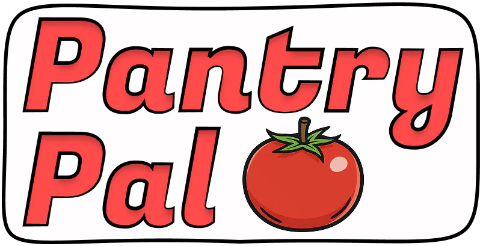

Thrown away, uneaten
The USDA estimates 35% of the U.S. food supply is wasted every year — often just because no one knows what to make with what's left.
an AI cooking partner

PantryPal turns the ingredients you already have into meals you actually want to cook. Snap your fridge or your receipt — computer vision stocks your digital shelf, and an AI recipe engine does the rest.
Designed and built end-to-end: research, wireframes, a six-screen hi-fi prototype, and working code with a live Gemini API integration.
+40% task completion across testing rounds